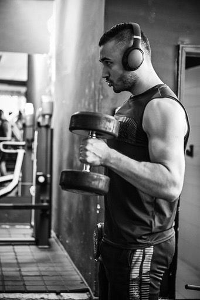
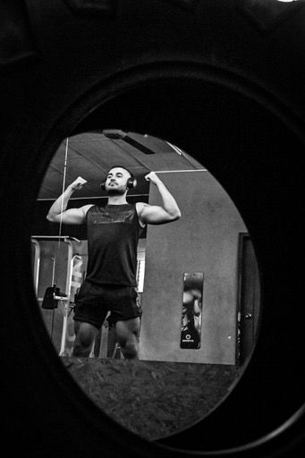

"Quiero dar las gracias a mi coach (Juan Felipe Castaño) por su increíble apoyo y guía. Gracias a tus consejos, hoy hablo con más confianza y claridad. ¡Eres un crack! Desde que empezamos este viaje, he sentido que mis habilidades se han transformado de manera espectacular. Tu paciencia, dedicación y tu forma de explicar las cosas hacen que todo parezca posible. Aprecio cada sesión, cada consejo y cada palabra de aliento que me has dado. Tu motivación ha sido un faro en mi camino. Gracias."
Juan Felipe Castaño

Sobre Mí
¡Hola! Soy Juan Felipe Castaño Restrepo, entrenador personal y preparador físico con un diplomado en nutrición deportiva. Mi pasión es ayudar a las personas a transformar sus vidas, tanto física como mentalmente, a través del ejercicio y la nutrición. Buscando implementar un enfoque integral que se adapte a cada persona, ya sea que busques mejorar tu condición física, perder peso, ganar fuerza o simplemente adoptar un estilo de vida más saludable. Tengo más de 3 años de experiencia donde he trabajado con personas de todas las edades y niveles de habilidad, ayudándoles a establecer metas claras y alcanzables. Mi filosofía de entrenamiento se centra en la constancia y el compromiso, y cada sesión está diseñada para maximizar tus resultados de manera segura y efectiva. Además, me mantengo en constante actualización para ofrecerte las técnicas más avanzadas y los métodos más efectivos.
¿Qué servicios puedo ofrecerte?

Planes de entrenamiento y nutrición
Diseñados para ayudarte a alcanzar tus metas de forma efectiva y saludable. Cada plan está adaptado a tus necesidades individuales, ya sea que busques ganar músculo, perder peso o mejorar tu rendimiento. Trabajaremos juntos para crear una rutina de ejercicios y una guía nutricional que se ajuste a tu estilo de vida y te motive a dar lo mejor de ti cada día. ¡Empieza tu transformación hoy y descubre todo lo que puedes lograr!
Entrenamiento personalizado presencial y a distancia
Logra tus objetivos de manera flexible con entrenamientos personalizados, disponibles tanto de forma presencial como a distancia. Ya sea que prefieras la motivación de una sesión cara a cara o la comodidad de entrenar desde casa, te ofrezco un acompañamiento completo y adaptado a tus necesidades. Juntos diseñaremos un plan efectivo que se ajuste a tu nivel y estilo de vida, para que puedas avanzar hacia tus metas, estés donde estés. ¡Descubre tu potencial conmigo!
Asesoría Nutricional
Optimiza tu alimentación y alcanza tus objetivos con una asesoría nutricional personalizada. A través de un plan adaptado a tus gustos, necesidades y metas, te guiaré para mejorar tus hábitos y sacar el máximo provecho de cada comida. Ya sea que busques perder peso, ganar masa muscular o simplemente llevar una dieta más saludable, tendrás el acompañamiento y las herramientas necesarias para mantenerte motivado y lograr cambios sostenibles. ¡Empieza hoy tu transformación desde la cocina!
Testimonios
Empieza tu Cambio Hoy
Asesoría profesional y adaptada a tus necesidades
